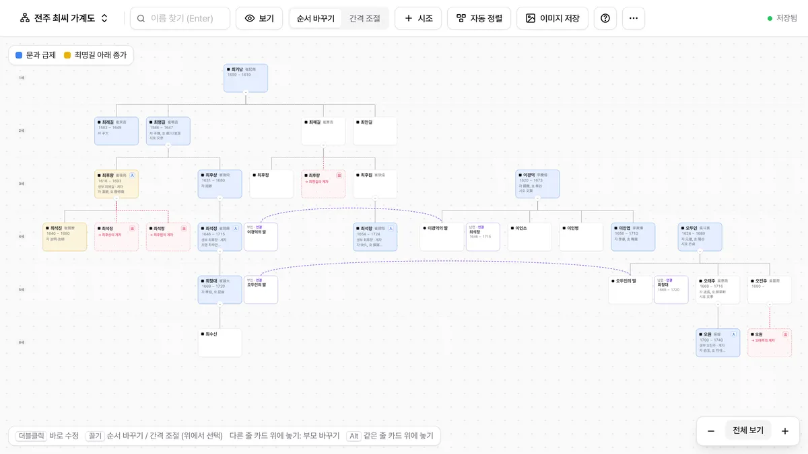
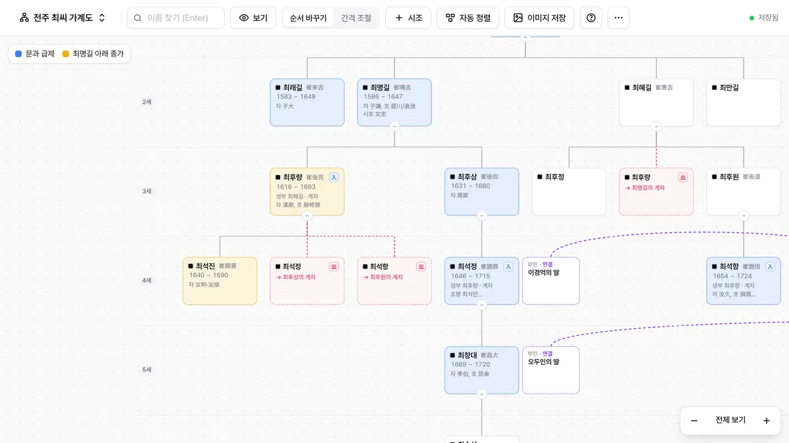
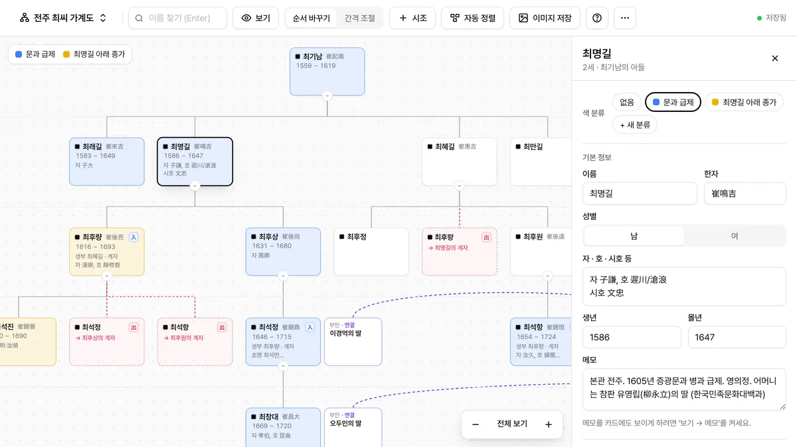
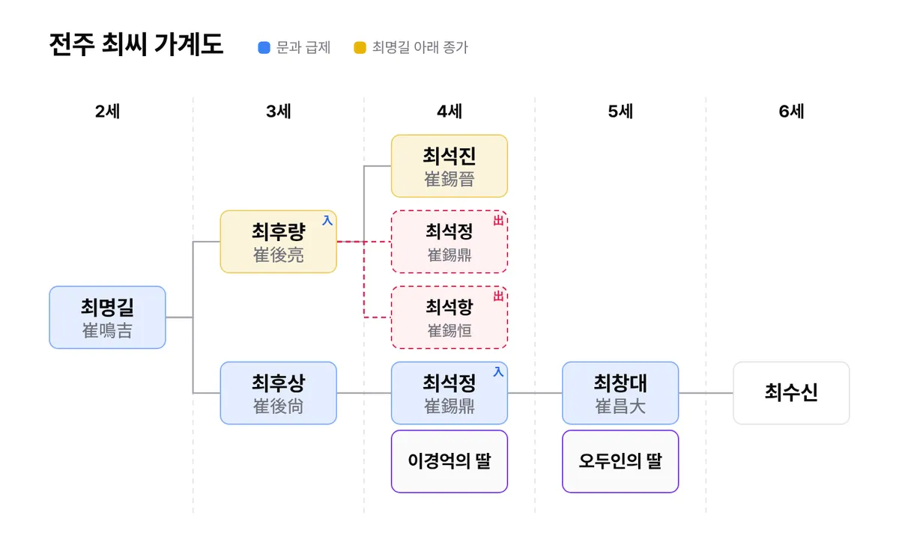
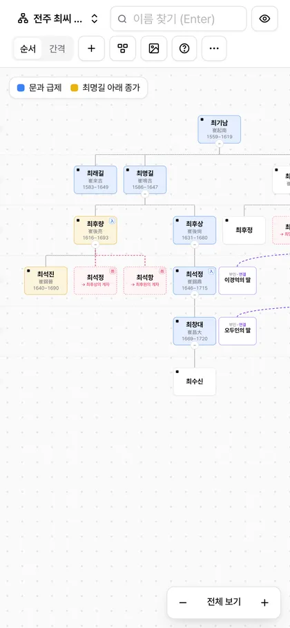

족보·가계도를
무료로 그리는 웹 편집기
설치도 가입도 없이 브라우저에서 바로 씁니다. 카드를 누르고, 더블클릭하고, 끌어서 집안의 가계도를 만들어 보세요. 아들·딸을 이어 붙이면 가지가 알아서 자리를 만듭니다.

무엇을 할 수 있나요
세대가 줄 맞춰 자동 배치
같은 세(世)는 항상 같은 줄. 자녀를 넣으면 옆 가지가 알아서 비켜나고 카드는 겹치지 않습니다.
出系·入系(양자) 기록
계자로 대를 이은 사람은 계부 아래 入, 생가에는 出 칸이 남아 족보식으로 보입니다.
촌수 계산
두 사람을 고르면 친가·외가·처가·혼인으로 이어지는 길을 모두 찾아 몇 촌인지 보여 줍니다.
혼인으로 여러 가계 잇기
한 판에 여러 집안을 두고 혼인 관계를 선으로 잇습니다. 딸은 ‘女 + 사위 이름’ 족보식 표기도 됩니다.
엑셀(CSV)로 한꺼번에
엑셀에 한 줄에 한 사람씩 정리한 표를 불러오면 가계도가 바로 그려집니다. 지금 가계도를 표로 내보낼 수도 있습니다.
이미지로 저장 · 흑백 인쇄
전체나 특정 사람 아래만, 세로·가로로 PNG 저장. 흑백 인쇄용으로 바꾸면 회색 명도와 테두리로 분류를 구분합니다.
색 분류 · 간단히 보기
종손 계통, 급제자 등 분류를 색으로 표시하고, 이름·한자·생년만 보는 간단한 카드로 큰 가계도도 한눈에.
링크로 보내기
만든 가계도를 링크 하나로 보내면, 받는 사람이 열었을 때 그 사람 화면에 바로 들어갑니다. 가입 없이 짧은 링크 하나면 됩니다.
자·호·시호와 메모
한자 이름, 생몰년, 자·호·시호, 행적과 묘소 메모를 카드마다 기록합니다.


이렇게 시작합니다
- 판 만들기 — 왼쪽 위 판 이름에서 ‘+ 새 가계도 만들기’
- 시조 넣기 — 툴바 ‘+ 시조’를 누르고 이름을 씁니다
- 이어 붙이기 — 카드를 누르고 아들·딸·부인을 추가합니다
- 저장하기 — 자동으로 저장되고, ‘이미지 저장’으로 그림 파일을 받습니다


휴대폰에서도
두 손가락으로 확대·축소하고, 편집기는 화면 아래에서 올라옵니다. 홈 화면에 추가하면 앱처럼 쓸 수 있고, 인터넷이 없어도 열립니다.
자주 묻는 질문
- 정말 무료인가요? 가입해야 하나요?
- 무료이고 가입도 필요 없습니다. 주소를 열면 바로 쓸 수 있습니다.
- 만든 가계도는 어디에 저장되나요?
- 지금 쓰는 기기의 브라우저 안에만 저장되고, 서버로 보내지 않습니다 (‘링크로 보내기’를 누를 때만 그 판이 공유 서버에 올라갑니다). 다른 기기로 옮기거나 보관하려면 ‘⋯ → 모든 판 백업’으로 파일을 받아 두세요.
- 이미 엑셀로 정리한 족보가 있어요.
- ‘⋯ → CSV 양식 받기’로 양식을 받아 옮겨 적고 불러오면 가계도가 그려집니다. 부모·배우자는 번호나 이름으로 적으면 됩니다.
- 가족에게 보여 주고 싶어요.
- ‘⋯ → 이 판을 링크로 보내기’로 링크를 보내면 받는 사람의 브라우저에 새 판으로 들어갑니다. 그림으로 보내려면 ‘이미지 저장’을 쓰세요.
- 인쇄할 수 있나요?
- ‘이미지 저장’으로 PNG를 받아 인쇄합니다. 흑백 프린터라면 ‘분류를 흑백 인쇄용으로’를 켜세요.